1 de noviembre de 2026 · Casa habitación
Casa Umbral
Corriente: Minimalista
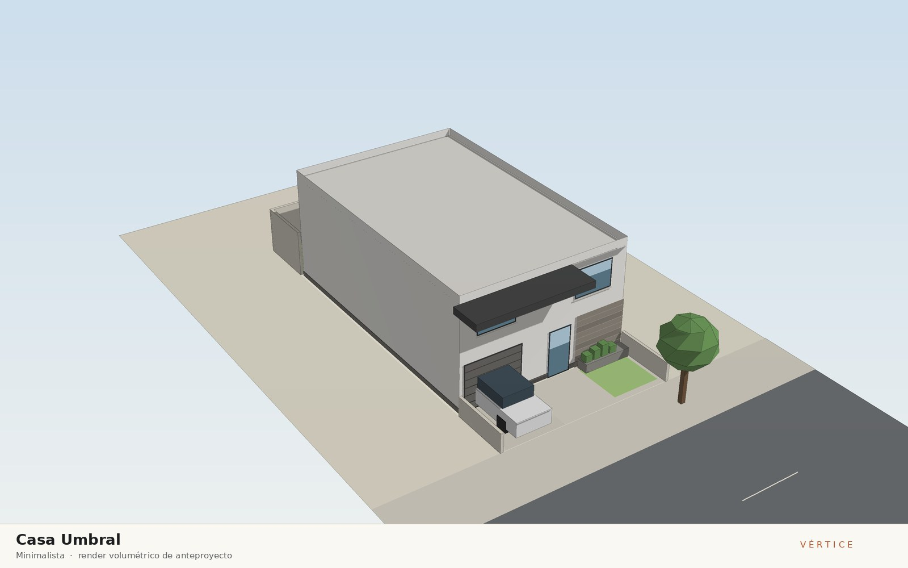
Concepto
Vivienda de dos niveles en un lote de 9 x 20 m en Tijuana, resuelta como un prisma blanco que se cierra a las colindancias y se abre al patio norte. Un volado de concreto gris carbón marca el umbral de acceso y sombrea las recámaras de la fachada sur, mientras un paño de piedra laja ancla el volumen al suelo y equilibra la fachada. La escalera abierta al vestíbulo funciona como núcleo que separa la zona pública de la privada, y la sala-comedor con cocina abierta mira al patio posterior para captar la brisa del poniente con ventilación cruzada.
Dictamen del arquitecto
- Terreno de 9.00 x 20.00 m (180 m²); casa de 9.00 x 14.00 m a paños exteriores, restricción frontal de 3.00 m y patio posterior de 3.00 m. COS 0.67 y CUS 1.34.
- Recorrido continuo: acceso → vestíbulo → sala-comedor con cocina abierta; la escalera abre al vestíbulo y en planta alta al pasillo, del que salen todas las recámaras y el baño 2.
- Recámaras con lado mayor o igual a 2.70 m y ventana al exterior; cochera de 3.40 x 5.60 m; escalera en U de 2.30 m con descanso.
- Volado gris carbón sobre el acceso y las recámaras al sur; paño de piedra laja en el muro ciego más ancho de la fachada; jardinera de vegetación endémica al frente.
- Medio baño interior con extractor mecánico obligatorio.
Dictamen de ingeniería
- Veredicto: construible conforme a norma con los supuestos indicados.
- Estructura de mampostería confinada: block 15x20x40, 31 castillos K-1 15x20 en planta baja (a 3.5 m como máximo y en cada intersección), dalas de desplante, cerramiento y pretil; losas macizas de 12 cm (claro crítico de 5.25 x 4.75 m en la sala-comedor).
- Cimentación con zapata corrida de 0.60 m y contratrabe de 20x40 cm, considerando una capacidad del suelo supuesta de 12 t/m²; se requiere estudio de mecánica de suelos antes de construir.
- Sismo (supuesto c = 0.32, Q = 2): cortante basal de aproximadamente 22 t. Verificar la densidad de muros en ambas direcciones y dejar junta de colindancia con las construcciones vecinas.
- Instalaciones: toma de 13 mm, cisterna de 2 m³ con hidroneumático, colector de 100 mm al 2 %, 2 bajadas pluviales de 100 mm, acometida bifásica de 220/127 V (6.3 kW de demanda) y tanque de gas LP de 300 L en azotea. Factibilidades de CESPT y CFE por tramitar.
Materiales
Muros de block de concreto 15x20x40 con aplanado fino blanco; volado de concreto aparente pigmentado gris carbón; paño de piedra laja de la región en fachada principal; jardinera de concreto con vegetación endémica de bajo consumo de agua; cancelería de aluminio negro con vidrio claro de 6 mm; porcelanato 60x120 tono arena; impermeabilizante blanco reflectivo en azotea.
Vistas
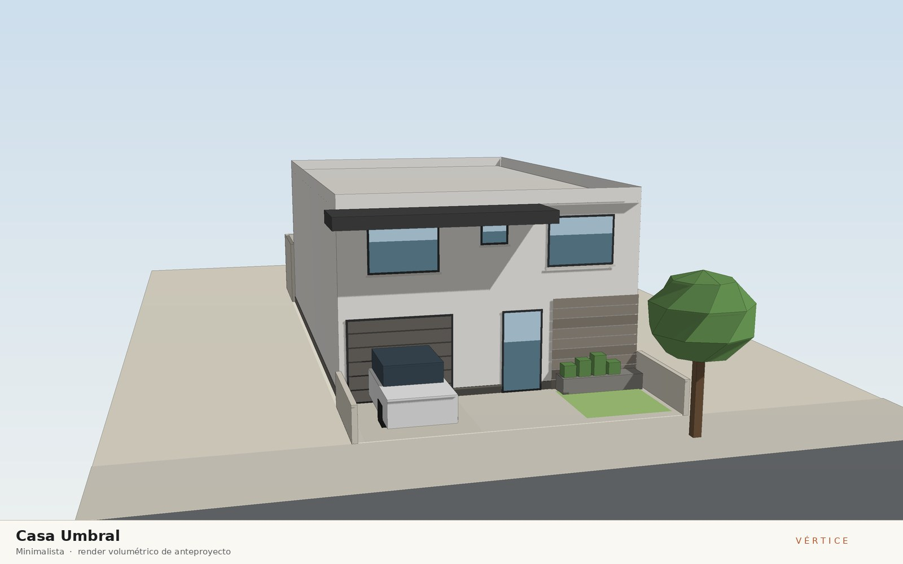
Descargas
Planos

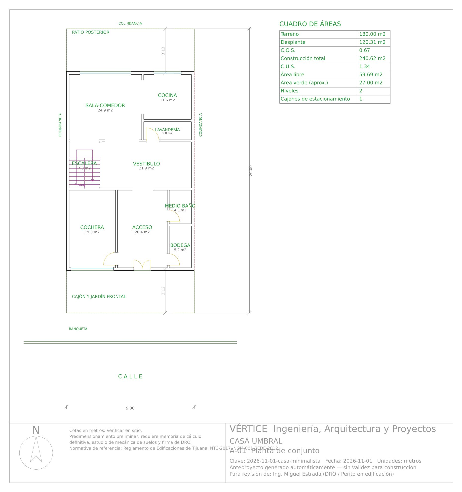

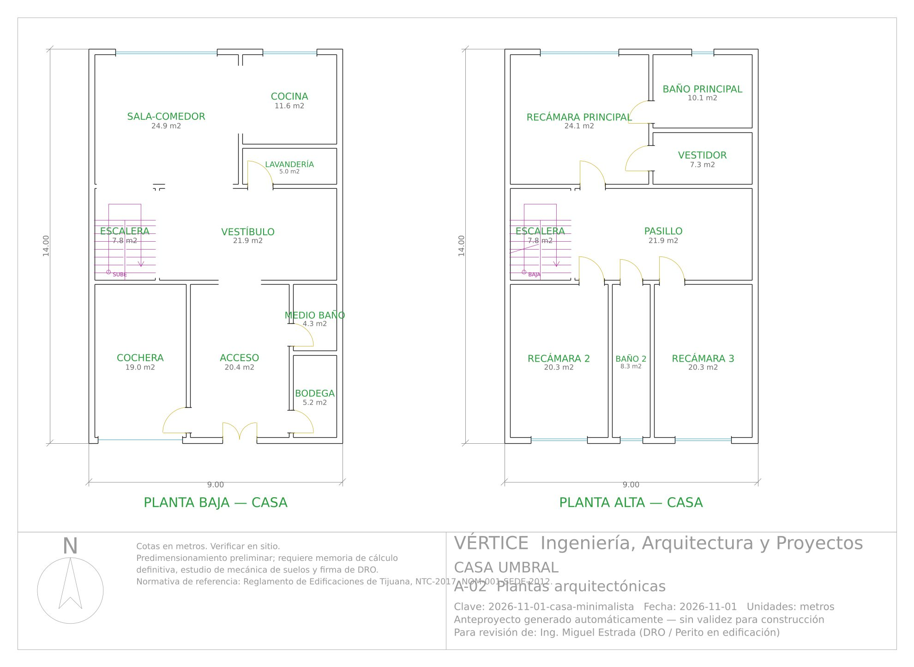

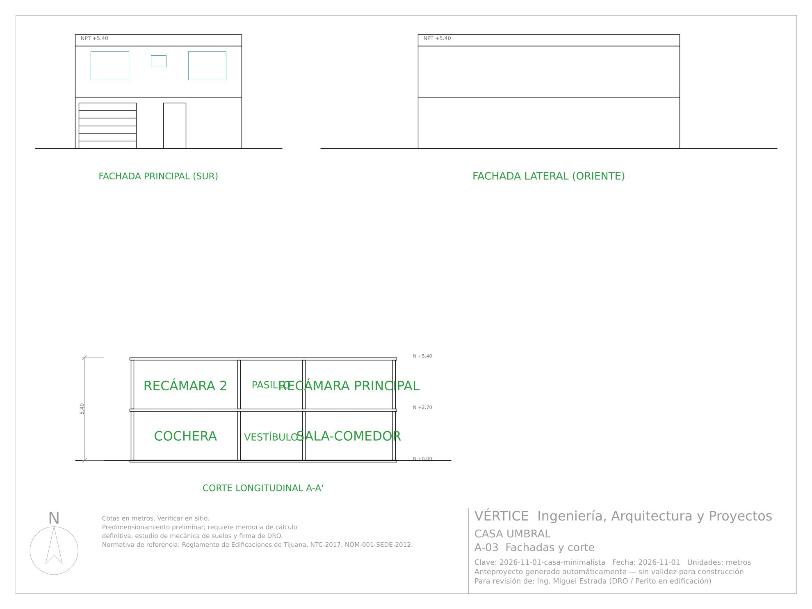

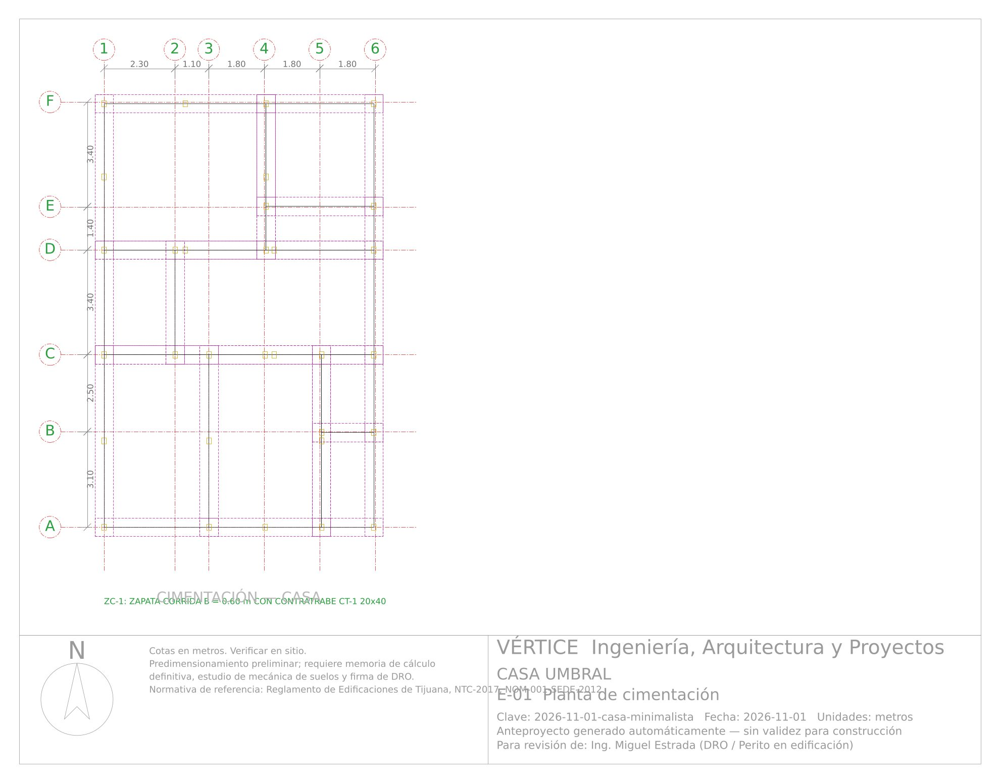

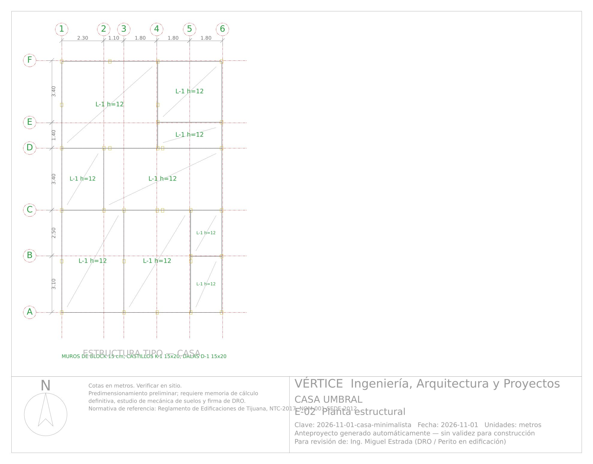

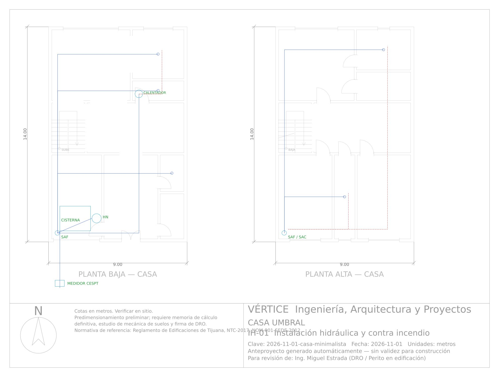

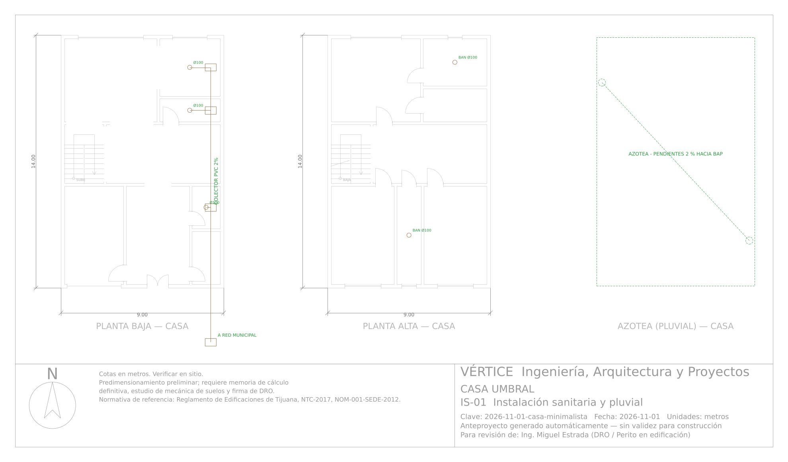

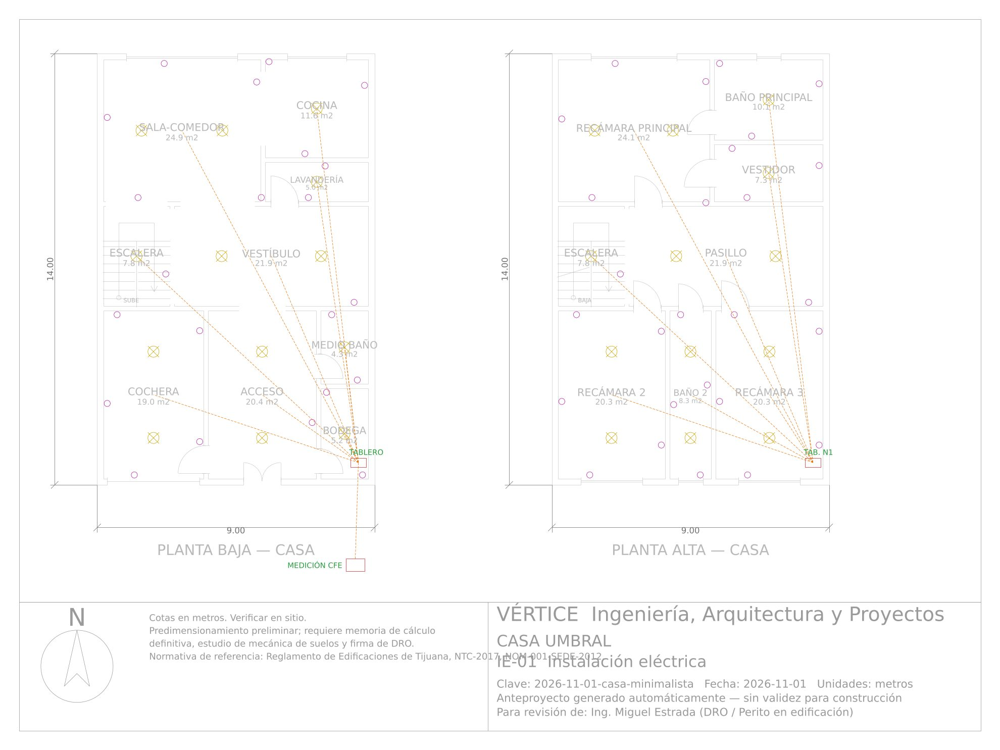

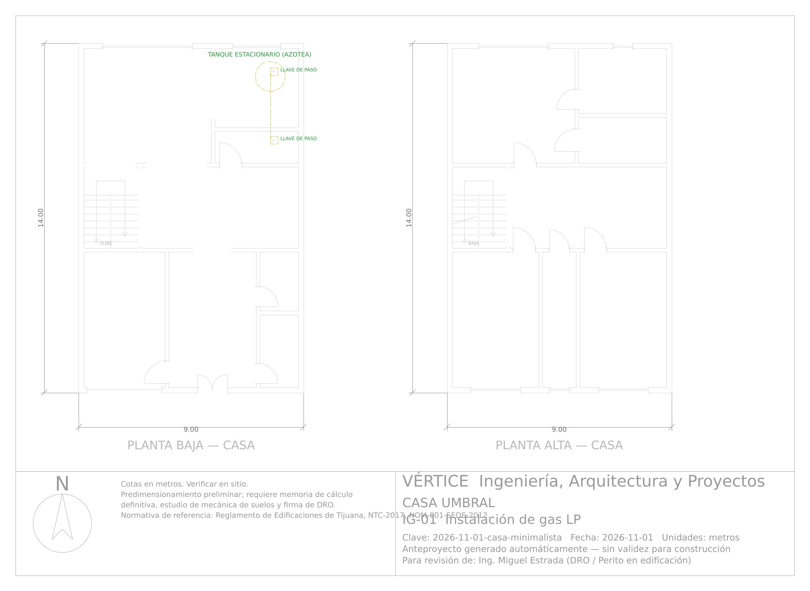
Estructura
Casa — Mampostería confinada
| Elemento | Propuesta | Observación |
|---|---|---|
| Muros | Block hueco de concreto 15x20x40 cm, f'm ≥ 20 kg/cm², junteado con mortero tipo I | Mampostería confinada |
| Castillos K-1 | 15x20 cm, 4 vars #3, est. #2 @ 20 cm (@10 en extremos) | 31 piezas en planta baja |
| Dalas D-1 | 15x20 cm, 4 vars #3, est. #2 @ 20 cm | En desplante, cerramiento y pretil |
| Losas | Losa maciza h = 12 cm, f'c = 250 kg/cm², vars #3 @ 20 cm ambos sentidos | Claro crítico Sala-comedor |
| Cimentación | Zapata corrida de concreto f'c = 250, ancho 0.60 m, h = 20 cm, con contratrabe 20x40 cm | q_adm supuesta 12.0 t/m² |
| Firme | Concreto f'c = 150 kg/cm², h = 10 cm, malla 6x6-10/10 | Sobre terreno compactado 95 % Proctor |
h_losa_cm=12 · CM_kgm2=478 · CV_kgm2=190 · carga_lineal_tm=4.29 · ancho_zapata_m=0.6 · q_adm_tm2=12.0 · W_t=137.9 · Q=2.0 · c=0.32 · V_basal_t=22.1
Instalaciones
Hidráulica
| Concepto | Valor | Criterio |
|---|---|---|
| Dotación | 150 L/hab/día × 4 | 0.6 m³/día |
| Gasto medio / máx. diario | 0.01 / 0.01 L/s | Qmd = 1.2 Qm |
| Toma domiciliaria | Ø 13 mm | Contrato CESPT, medidor en límite de predio |
| Unidades mueble | 22 UM (11 muebles) | Gasto instantáneo (Hunter) ≈ 1.21 L/s |
| Alimentación general | Ø 38 mm | Tubería CPVC / PPR, v ≤ 1.5 m/s |
| Cisterna | 2 m³ | 2 días de reserva |
| Equipo de bombeo | Hidroneumático / presurizador | Presión mínima 1.0 kg/cm² en mueble más desfavorable |
| Agua caliente | Calentador de paso a gas | Retorno de agua caliente en recorridos > 15 m |
Sanitaria
| Concepto | Valor | Criterio |
|---|---|---|
| Unidades de descarga | 25 UD | Tabla de UD por mueble |
| Colector principal | Ø 100 mm PVC sanitario | Pendiente mínima 2 % |
| Registros | 40x60 cm (60x80 en > 1.5 m de prof.) | A cada 10 m y en cambios de dirección |
| Ventilación | Tubo de ventilación Ø 50 mm por núcleo de muebles | Rematar 30 cm sobre azotea |
| Descarga | A colector municipal CESPT | Registro de banqueta |
Pluvial
| Concepto | Valor | Criterio |
|---|---|---|
| Área de captación | 120 m² | Intensidad de diseño 100 mm/h (supuesta) |
| Gasto pluvial | 3.3 L/s | Q = i · A / 3600 |
| Bajadas | 2 de Ø 100 mm | Capacidad ≈ 4.5 L/s c/u |
| Disposición | A pozo de absorción / área verde y excedencias a calle | Separada del drenaje sanitario |
Eléctrica
| Concepto | Valor | Criterio |
|---|---|---|
| Carga instalada | 9.0 kW | W/m² según uso + equipos |
| Demanda | 6.3 kW (7.0 kVA) | Factor de demanda 0.7 |
| Acometida | Bifásica 2F-3H 220/127 V | Corriente ≈ 32 A |
| Alimentador general | cal. 8 AWG/kcmil THW-LS, Cu | Ampacidad al 125 % |
| Luminarias | ≈ 26 LED | Niveles NOM-025-STPS / NOM-007-ENER |
| Tierra física | Electrodo de cobre 3 m + registro | Unión equipotencial, NOM-001-SEDE-2012 |
| Energía renovable | Sistema FV interconectado ≈ 2 kWp | Opcional, recomendado |
Gas LP
| Concepto | Valor | Criterio |
|---|---|---|
| Combustible | Gas LP | NOM-004-SEDG-2004 |
| Almacenamiento | Tanque estacionario 300 L | En azotea o patio, ventilado, a > 3 m de flamas |
| Red | Cobre tipo L Ø 3/8" a 3/4" con regulador de 2 etapas | Prueba de hermeticidad a 1.5× presión de trabajo |
Revisión de calidad
Sin errores · 1 avisos
| Tipo | Nivel | Observación |
|---|---|---|
| Aviso | Casa · Planta baja | Medio baño: ventilación mecánica (extractor) obligatoria. |
Cuadro de áreas
Ver los 17 espacios
| Bloque | Nivel | Espacio | Medidas (m) | Área (m²) |
|---|---|---|---|---|
| Casa | Planta baja | Cochera | 3.40 x 5.60 | 19.04 |
| Casa | Planta baja | Acceso | 3.65 x 5.60 | 20.44 |
| Casa | Planta baja | Bodega | 1.70 x 3.08 | 5.24 |
| Casa | Planta baja | Medio baño | 1.70 x 2.52 | 4.28 |
| Casa | Planta baja | Escalera | 2.30 x 3.40 | 7.82 |
| Casa | Planta baja | Vestíbulo | 6.45 x 3.40 | 21.93 |
| Casa | Planta baja | Sala-comedor | 5.25 x 4.75 | 24.94 |
| Casa | Planta baja | Lavandería | 3.50 x 1.43 | 4.99 |
| Casa | Planta baja | Cocina | 3.50 x 3.33 | 11.64 |
| Casa | Planta alta | Recámara 2 | 3.63 x 5.60 | 20.33 |
| Casa | Planta alta | Baño 2 | 1.49 x 5.60 | 8.34 |
| Casa | Planta alta | Recámara 3 | 3.63 x 5.60 | 20.33 |
| Casa | Planta alta | Escalera | 2.30 x 3.40 | 7.82 |
| Casa | Planta alta | Pasillo | 6.45 x 3.40 | 21.93 |
| Casa | Planta alta | Recámara principal | 5.08 x 4.75 | 24.11 |
| Casa | Planta alta | Vestidor | 3.67 x 2.00 | 7.33 |
| Casa | Planta alta | Baño principal | 3.67 x 2.75 | 10.12 |
Anteproyecto conceptual generado por el motor Vértice. El predimensionamiento estructural y los cálculos de instalaciones son preliminares y no sustituyen la memoria de cálculo definitiva, el estudio de mecánica de suelos ni la revisión y firma del DRO y corresponsables.